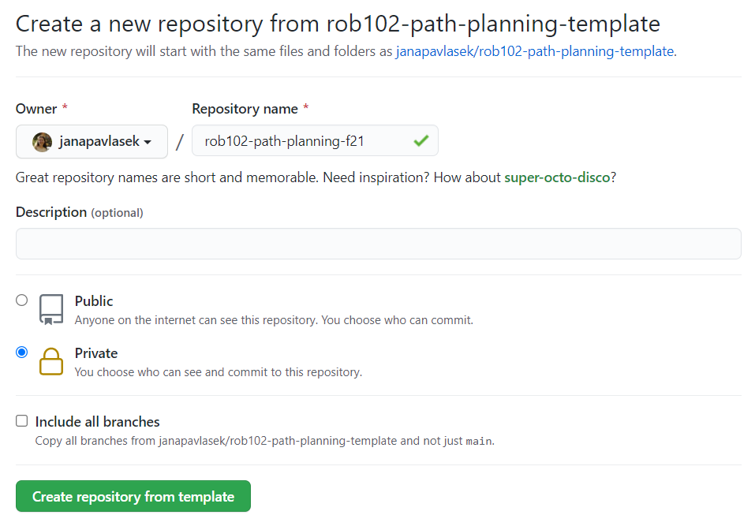
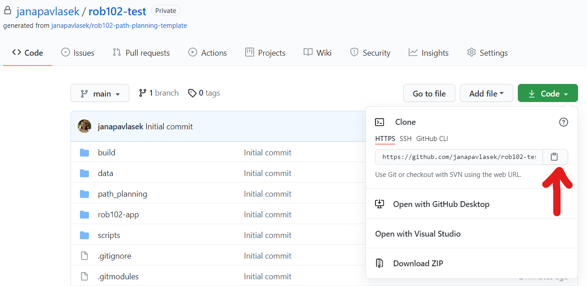
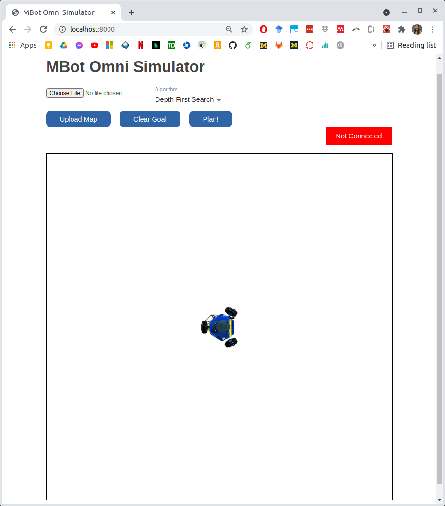
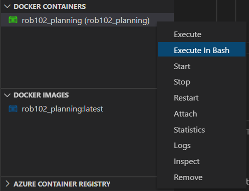

Before you start, make sure you have followed the Setup Instructions. You will need to have VSCode, Docker and Git installed (if using Windows, you will also need Git Bash) in order to complete this tutorial.
Getting the code
We will use Github to manage our code. A Github tutorial is available here.
The code you write for Projects 2 and 3 will be stored in a repository on your own Github account. To create this repository, we will use a
You will see a screen like the one below. Pick a name for your repository, and make sure it is set to private. Storing your assignment solutions in a public repository is a violation of the honor code. You can leave the option to include all branches unchecked.
Next, you will give the instructors access to your code. In your new repository, go to "Settings" > "Manage Access" and click "Invite a collaborator". Add Prof. Jenkins and Jana using their usernames, ohseejay and janapavlasek.

Finally, we're ready to clone the repository! Open a terminal (on Mac, click the Launchpad, search for "Terminal"and select the terminal program. On Windows, open Git Bash). Use the cd command to navigate to the folder where you would like to keep your code. Clone your repo using:
git clone --recurse-submodules <ADDRESS>Substitute the address to your repo, which you can copy using the clipboard button.
Starting the app
For Projects 2 and 3, you will be running your code in a Docker container. The web app will run in the same Docker container. The Docker image includes all the dependencies you need to write your code and run the app, so you only need to have Docker installed to get started.
Open VSCode, and open the directory that you cloned using "File" > "Open Folder...". Navigate to where you cloned your repository, and select it. You should see your folder and all the files it contains the VSCode's Explorer  . Open a terminal using "Terminal" > "New Terminal". The terminal should open in the root of your code directory. If you are using Windows, make sure you are using a Bash terminal (the VSCode setup instructions explained to how make Bash your default terminal). Now, build the Docker image with the script provided:
. Open a terminal using "Terminal" > "New Terminal". The terminal should open in the root of your code directory. If you are using Windows, make sure you are using a Bash terminal (the VSCode setup instructions explained to how make Bash your default terminal). Now, build the Docker image with the script provided:
./docker_build.sh- Hint: If you see an error that says
E: Release file for <ADDRESS> is not valid yet [...]when building the image, your system clock might be mismatched with Docker's clock. Try restarting Docker, and if that doesn't work, restart your computer.
To run the Docker container, do:
./docker_run.shYou should see a container called rob102_planning running under "Docker Containers" in VSCode's Explorer, if you have installed the Docker extensions for VSCode.
Using the webapp
When Docker is running, you should see the app, as shown below, when you navigate to http://localhost:8000 in your browser.
The webapp has the following features:
- Upload a map: Use the "Choose File" button to navigate to a map file. The app supports any file with the
.mapextension, but the C++ server only supports the ones in thedatafolder in the code template. Make sure you pick a file with the.mapextension, not an image. The Upload Map button loads the map for visualization. If the C++ server is connected, it also sends the map to the server, which will load the map and call potential field functions. - Algorithm selection: Use the dropdown menu to select the algorithm you would like to use for path planning. If the code for that algorithm isn't implemented, no path will be planned.
- Plan a path: The Plan! button calls your path planning functions for the chosen algorithm. You can set the goal location by clicking on the map, which will turn that cell yellow. You can drag the robot to change the start location. When you click on Plan! the goal cell will turn green if it is valid and your path planning function will be triggered. If the goal is not valid, the cell will turn red. The Plan! button only works if a map is loaded, a valid goal is selected, and the backend is connected. Otherwise, it won't do anything.
Writing the code
You will be writing code in the rob102-path-planning/path_planning directory. This directory is
You will compile and execute your code in the Docker container. To do this, you will open a terminal inside the container. Right-click on the running docker image under "Docker Containers" in VSCode and select "Execute in bash." This will open up a terminal which you can use to interact with the container.
 To compile the code, first enter into thebuild directory for this project, where we will be storing all the binaries and build files:
cd /code/buildTo compile the code, we will use CMake, which will help find the dependencies and link them to our code during compilation. This is a two step process:
cmake ..
makeThe cmake command sets up our project for compilation by finding all the libraries and compilers we need. The argument .. points to the directory one folder back from the current folder (in this case, /code), where the file CMakeLists.txt is stored. This gives CMake instructions about how to compile the code. The make command performs the compilation. Generally, you only have to run cmake once. The make command needs to be rerun every time you modify the code.
We have provided code in server.cpp which communicates with the app and calls the functions that you will be writing in Projects 2 and 3. It opens up a websocket that connects to the app. When you upload a map and send a planning goal, the server will load the map and call the planning functions for you. When the plan is found, the server will send the plan to the app to display. To run the server, in the Docker container, within the build directory, do:
./path_planning/path_planning_serverYou should see a message when the connection is open, and the status message on the app should turn green and say "Connected." Right now, we haven't written any code so the app won't do much. You are now ready to complete Project 2 and Project 3!